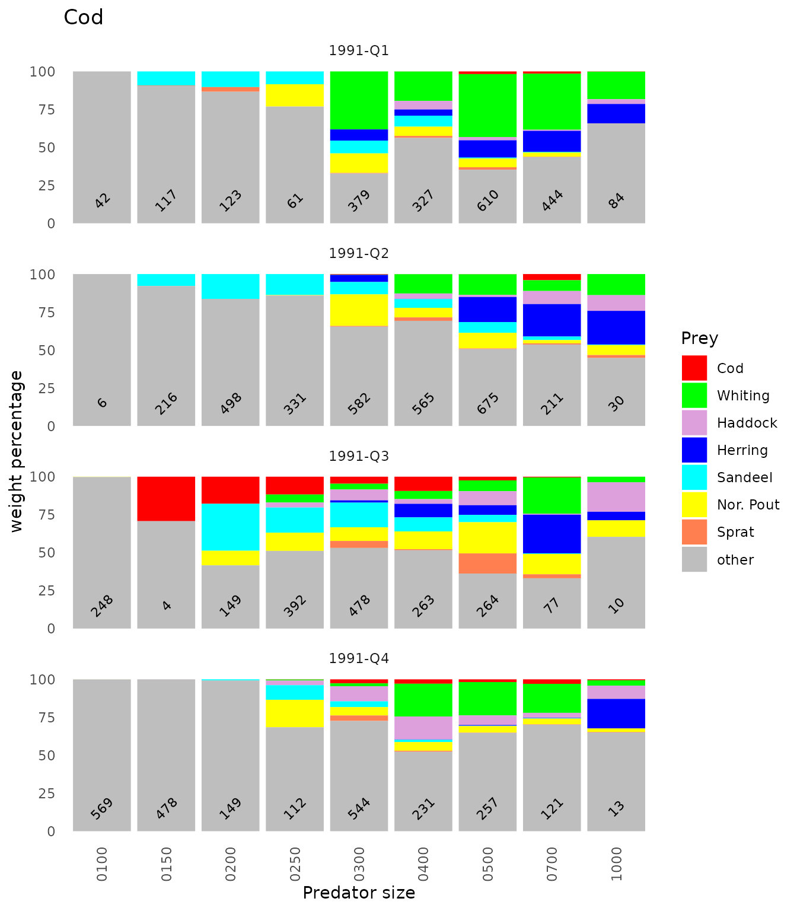

Example 04: Population diet
ex04_Population_diet.RmdThe population diet (estimated in Example 03) is organised as an object of the class STOMdiet, which is basically a list of predator and prey related information. The attributes to a STOMdiet (the control object) includes information on the compilation of data.
library(FishStomachs)
suppressMessages(library(dplyr))
suppressMessages(library(readr))
load(file=file.path(system.file( package = "FishStomachs"),"extdata","ex03d.Rdata"))
d
#> Object of class 'STOMdiet'
#> ===========================
#> Number stomachs: 9660
#> Predators: Gadus morhua
#> Number of prey names: 8
#> Prey names:Ammodytidae; Clupea harengus; Gadus morhua; Melanogrammus aeglefinus;
#> Merlangius merlangus; Sprattus sprattus; Trisopterus esmarkii; other;
#> Temporal strata: 1991-Q1; 1991-Q2; 1991-Q3; 1991-Q4;
d[['PRED']] # predator related information
#> # A tibble: 36 × 9
#> stratum_area stratum_time pred_…¹ pred_…² pred_…³ n_tot n_sam…⁴ pred_…⁵ key
#> <fct> <fct> <fct> <fct> <int> <int> <int> <dbl> <fct>
#> 1 all 1991-Q1 Gadus … 0100-0… 3 42 18 135 all_…
#> 2 all 1991-Q1 Gadus … 0150-0… 4 117 51 175 all_…
#> 3 all 1991-Q1 Gadus … 0200-0… 5 123 56 225 all_…
#> 4 all 1991-Q1 Gadus … 0250-0… 6 61 29 275 all_…
#> 5 all 1991-Q1 Gadus … 0300-0… 7 379 128 361. all_…
#> 6 all 1991-Q1 Gadus … 0400-0… 8 327 122 450 all_…
#> 7 all 1991-Q1 Gadus … 0500-0… 9 610 301 588. all_…
#> 8 all 1991-Q1 Gadus … 0700-0… 10 444 238 840. all_…
#> 9 all 1991-Q1 Gadus … 1000-1… 11 84 62 1104. all_…
#> 10 all 1991-Q2 Gadus … 0100-0… 3 6 6 135 all_…
#> # … with 26 more rows, and abbreviated variable names ¹pred_name, ²pred_size,
#> # ³pred_size_class, ⁴n_sample, ⁵pred_l_mean
d[['PREY']] # prey related information
#> # A tibble: 469 × 5
#> key prey_name prey_s…¹ prey_…² prey_w
#> <fct> <fct> <fct> <int> <dbl>
#> 1 all_Gadus morhua_1991-Q1_0100-0149 other 9999-99… 0 349.
#> 2 all_Gadus morhua_1991-Q1_0150-0199 Ammodytidae 0070-00… 2 9.07
#> 3 all_Gadus morhua_1991-Q1_0150-0199 Ammodytidae 0150-01… 4 29.4
#> 4 all_Gadus morhua_1991-Q1_0150-0199 other 9999-99… 0 378.
#> 5 all_Gadus morhua_1991-Q1_0150-0199 Sprattus sprattus 0050-00… 1 0.170
#> 6 all_Gadus morhua_1991-Q1_0150-0199 Sprattus sprattus 0070-00… 2 1.17
#> 7 all_Gadus morhua_1991-Q1_0200-0249 Ammodytidae 0050-00… 1 94.8
#> 8 all_Gadus morhua_1991-Q1_0200-0249 Ammodytidae 0100-01… 3 3.80
#> 9 all_Gadus morhua_1991-Q1_0200-0249 other 9999-99… 0 829.
#> 10 all_Gadus morhua_1991-Q1_0200-0249 Sprattus sprattus 0070-00… 2 29.3
#> # … with 459 more rows, and abbreviated variable names ¹prey_size,
#> # ²prey_size_class
# show parts of the control attributes
print(attr(d,'control'),show=c('calc_diet','stratification'))
#>
#> #### group: calc_diet
#> sel_preys: chr [1:7] "Gadus morhua" "Merlangius merlangus" "Melanogrammus aeglefinus" ...
#> min_prey_length: int 50
#> calc_sub_strata: List of 3
#> $ relative_weight : logi FALSE
#> $ weighting_factor : expression(n_tot)
#> $ weighting_factor_file: logi NA
#> calc_strata: List of 3
#> $ relative_weight : logi FALSE
#> $ weighting_factor : expression(sqrt(mean_cpue))
#> $ weighting_factor_file: logi NA
#> calc_total: List of 3
#> $ relative_weight : logi FALSE
#> $ weighting_factor : logi NA
#> $ weighting_factor_file: chr "/tmp/Rtmpv4RwBU/temp_libpath5b021b277167/FishStomachs/extdata/weighting_total.csv"
#>
#> #### group: stratification
#> strata_area_exp: expression(paste("R", area, sep = "-"))
#> strata_sub_area_exp: expression(rectangle)
#> strata_time_exp: expression(paste0(year, "-Q", quarter))
#> strata_year_back: expression(as.numeric(substr(stratum_time, 1, 4)))
#> strata_quarter_back: expression(as.numeric(substr(stratum_time, 7, 8)))STOMdiet objects can be sub-setted and combined by the methods subset and c.
# make a subset of data
d1<-subset(d,pred_size=='0400-0499' & stratum_time=="1991-Q1")
d1
#> Object of class 'STOMdiet'
#> ===========================
#> Number stomachs: 327
#> Predators: Gadus morhua
#> Number of prey names: 8
#> Prey names:Ammodytidae; Clupea harengus; Gadus morhua; Melanogrammus aeglefinus;
#> Merlangius merlangus; Sprattus sprattus; Trisopterus esmarkii; other;
#> Temporal strata: 1991-Q1;
# another subset
d2<-subset(d, stratum_time=="1991-Q2")
d2
#> Object of class 'STOMdiet'
#> ===========================
#> Number stomachs: 3114
#> Predators: Gadus morhua
#> Number of prey names: 8
#> Prey names:Ammodytidae; Clupea harengus; Gadus morhua; Melanogrammus aeglefinus;
#> Merlangius merlangus; Sprattus sprattus; Trisopterus esmarkii; other;
#> Temporal strata: 1991-Q2;
#combine subsets
c(d1,d2)
#> Object of class 'STOMdiet'
#> ===========================
#> Number stomachs: 3441
#> Predators: Gadus morhua
#> Number of prey names: 8
#> Prey names:Ammodytidae; Clupea harengus; Gadus morhua; Melanogrammus aeglefinus;
#> Merlangius merlangus; Sprattus sprattus; Trisopterus esmarkii; other;
#> Temporal strata: 1991-Q1; 1991-Q2;
rm(d1,d2)It is also possible to transform STOMdiet object into a plain data.frame, modify data and convert back again.
# convert into a data frame
df<-as.data.frame(d)
df
#> # A tibble: 469 × 13
#> stratum…¹ strat…² pred_…³ pred_…⁴ pred_…⁵ n_tot n_sam…⁶ pred_…⁷ key prey_…⁸
#> <fct> <fct> <fct> <fct> <int> <int> <int> <dbl> <fct> <fct>
#> 1 all 1991-Q1 Gadus … 0100-0… 3 42 18 135 all_… other
#> 2 all 1991-Q1 Gadus … 0150-0… 4 117 51 175 all_… Ammody…
#> 3 all 1991-Q1 Gadus … 0150-0… 4 117 51 175 all_… Ammody…
#> 4 all 1991-Q1 Gadus … 0150-0… 4 117 51 175 all_… other
#> 5 all 1991-Q1 Gadus … 0150-0… 4 117 51 175 all_… Spratt…
#> 6 all 1991-Q1 Gadus … 0150-0… 4 117 51 175 all_… Spratt…
#> 7 all 1991-Q1 Gadus … 0200-0… 5 123 56 225 all_… Ammody…
#> 8 all 1991-Q1 Gadus … 0200-0… 5 123 56 225 all_… Ammody…
#> 9 all 1991-Q1 Gadus … 0200-0… 5 123 56 225 all_… other
#> 10 all 1991-Q1 Gadus … 0200-0… 5 123 56 225 all_… Spratt…
#> # … with 459 more rows, 3 more variables: prey_size <fct>,
#> # prey_size_class <int>, prey_w <dbl>, and abbreviated variable names
#> # ¹stratum_area, ²stratum_time, ³pred_name, ⁴pred_size, ⁵pred_size_class,
#> # ⁶n_sample, ⁷pred_l_mean, ⁸prey_name
# add a variable
df$cannibal<-as.character(df$pred_name)==as.character(df$prey_name)
#convert it back to a STOMdiet object with a new PREY variable
d2<-as_STOMdiet(df,new_prey_var = 'cannibal')
# "cannibal" s now included (in the PREY data set)
names(d2[['PREY']])
#> [1] "key" "prey_name" "prey_size" "prey_size_class"
#> [5] "prey_w" "cannibal"
rm(d2)There are various summary functions available for the STOMdiet object.
summary(d)
#> Number of stomachs by predator and year:
#> year
#> pred_name 1991
#> Gadus morhua 9660
summary(d,level=2)
#> Number of stomachs by predator and year:
#> quarter 1 2 3 4
#> pred_name year
#> Gadus morhua 1991 2187 3114 1885 2474
# make a subset of data
d1<-subset(d,pred_size=='0300-0399' & stratum_time=="1991-Q1")
d1
#> Object of class 'STOMdiet'
#> ===========================
#> Number stomachs: 379
#> Predators: Gadus morhua
#> Number of prey names: 6
#> Prey names:Ammodytidae; Clupea harengus; Merlangius merlangus; Sprattus sprattus;
#> Trisopterus esmarkii; other; Temporal strata: 1991-Q1;
summary(d1,level=3)
#> Absolute weight:
#>
#> Gadus morhua, 0300-0399, 1991, Q:1, n stomachs:379
#> Absolute weight:
#> prey_size
#> prey_name 0050-0069 0070-0099 0100-0149 0150-0199 0200-0249
#> Ammodytidae 10.0 173.7 296.1 0.3 0.0
#> Clupea harengus 0.0 218.0 0.0 184.5 17.5
#> Merlangius merlangus 0.0 0.0 961.0 1212.0 0.0
#> Sprattus sprattus 0.0 22.5 0.0 0.0 0.0
#> Trisopterus esmarkii 0.0 0.0 732.4 0.0 0.0
#> other 0.0 0.0 0.0 0.0 0.0
#> prey_size
#> prey_name 9999-9999
#> Ammodytidae 0.0
#> Clupea harengus 0.0
#> Merlangius merlangus 0.0
#> Sprattus sprattus 0.0
#> Trisopterus esmarkii 0.0
#> other 1865.1
summary(d1,level=4,drop.unused.levels=TRUE)
#> Relative weight in percentages:
#>
#> Gadus morhua, 0300-0399, 1991, Q:1, n stomachs:379
#> 0050-0069 0070-0099 0100-0149 0150-0199 0200-0249
#> Ammodytidae 0.2 3.1 5.2 0.0 0.0
#> Clupea harengus 0.0 3.8 0.0 3.2 0.3
#> Merlangius merlangus 0.0 0.0 16.9 21.3 0.0
#> Sprattus sprattus 0.0 0.4 0.0 0.0 0.0
#> Trisopterus esmarkii 0.0 0.0 12.9 0.0 0.0
#> other 0.0 0.0 0.0 0.0 0.0
#> all 0.2 7.3 34.9 24.5 0.3
#> 9999-9999 all
#> Ammodytidae 0.0 8.4
#> Clupea harengus 0.0 7.4
#> Merlangius merlangus 0.0 38.2
#> Sprattus sprattus 0.0 0.4
#> Trisopterus esmarkii 0.0 12.9
#> other 32.8 32.8
#> all 32.8 100.0And plots of relative stomach contents in weight.
#default
plot(d)#> NULL
# change in layout, shorter predator size on the x-axis ("from" value),
# added number of stomachs and added title
plot(d,Ncol=1,cut_pred_size=c(1,4),addTitle = TRUE, addNstom=TRUE,refac_prey=TRUE)#> NULLIt is possible to change the names of both predator and prey species.
# Change names into English names
d2<-from_to_species_diet(d,pred_from_to=c("species","short"),prey_from_to=c("species","short"),
sp_info_file=file.path(system.file( package = "FishStomachs"),"extdata",'species_info.csv'))
plot(d2,Ncol=1,cut_pred_size=c(1,4),addTitle = TRUE, addNstom=TRUE)
#> NULLPlots can also be done where the prey size class is shown. In this plot data from all quarters in 1991 are combined (weighted mean, by number of stomachs, of all quarters of 1991).
# detailed plot by predator size class at the top,
# prey size class on the x-axis and prey species shown at the right margin.
# The very small predators are excluded from the plot.
plotSize(subset(d2,!(pred_size %in% c("0100-0149","0150-0199"))),
cut_pred_size=c(1,3),addTitle=TRUE, byVar=c('year-quarter','year','quarter','none')[2])#> NULL
# table of differences
a<-xtabs(prey_w~prey_name+key,data=d_simple[['PREY']]);
# round(rbind(a,apply(a,2,sum)),3)
d1<-d2
#Relative stomach contents
d1[['PREY']]<- d1[['PREY']] %>% dplyr::group_by(key) %>%
dplyr::mutate(prey_w=prey_w/sum(prey_w)) %>% dplyr::ungroup()
b<-xtabs(prey_w~prey_name+key,data=d1[['PREY']]);
# round(rbind(b,apply(b,2,sum)),3)
# round((a-b)*1000)
plotdif(d1=d1,d2=d_simple,show_plot=TRUE,cut_pred_size=c(1,4),cut_prey_size=c(2,4),addTitle=TRUE,tAngle=90,
refac_prey=FALSE, relative=FALSE,maxDif=3,
byVar=c('year-quarter','year','quarter','none')[4])
#> NULL
plotdif(d1=d1,d2=d_simple,show_plot=TRUE,cut_pred_size=c(1,4),cut_prey_size=c(2,4),addTitle=TRUE,tAngle=90,
refac_prey=FALSE, relative=TRUE,maxDif=3,
byVar=c('year-quarter','year','quarter','none')[4])#> NULL